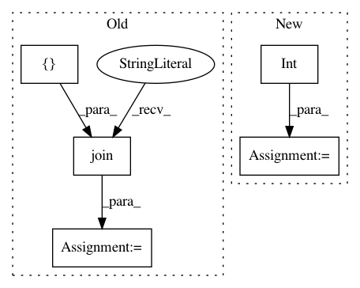

b65560304dc61e63fa45e5a26fee930661c6e998,ssd/engine/trainer.py,,do_train,#Any#Any#Any#Any#Any#Any#Any#Any#Any#,48
Before Change
end = time.time()
if iteration % args.log_step == 0:
eta_seconds = int((trained_time / iteration) * (max_iter - iteration))
log_str = [
"iter: {:06d}, lr: {:.5f}, cost: {:.2f}s, eta: {}".format(iteration,
optimizer.param_groups[0]["lr"],
time.time() - tic, str(datetime.timedelta(seconds=eta_seconds))),
"total_loss: {:.3f}".format(losses_reduced.item())
]
for loss_name, loss_item in loss_dict_reduced.items():
log_str.append("{}: {:.3f}".format(loss_name, loss_item.item()))
log_str = ", ".join(log_str)
// TODO: use MetricLogger to log
logger.info(log_str)
if summary_writer:
global_step = iteration
After Change
meters.update(time=batch_time)
if iteration % args.log_step == 0:
eta_seconds = meters.time.global_avg * (max_iter - iteration)
eta_string = str(datetime.timedelta(seconds=int(eta_seconds)))
logger.info(
meters.delimiter.join([
"iter: {iter:06d}",
"lr: {lr:.5f}",
In pattern: SUPERPATTERN
Frequency: 3
Non-data size: 5
Instances
Project Name: lufficc/SSD
Commit Name: b65560304dc61e63fa45e5a26fee930661c6e998
Time: 2019-06-23
Author: luffy.lcc@gmail.com
File Name: ssd/engine/trainer.py
Class Name:
Method Name: do_train
Project Name: biolab/orange3
Commit Name: 1c951091e7d7877405560ef505f9fd2c9801610a
Time: 2014-12-05
Author: janez.demsar@fri.uni-lj.si
File Name: Orange/widgets/classify/owclassificationtreegraph.py
Class Name: OWClassificationTreeGraph
Method Name: update_node_info
Project Name: allenai/allennlp
Commit Name: 0459261c388bec72937e0268c4316b85279d0bac
Time: 2018-09-24
Author: kl2806@columbia.edu
File Name: allennlp/semparse/contexts/atis_tables.py
Class Name:
Method Name: get_numbers_from_utterance